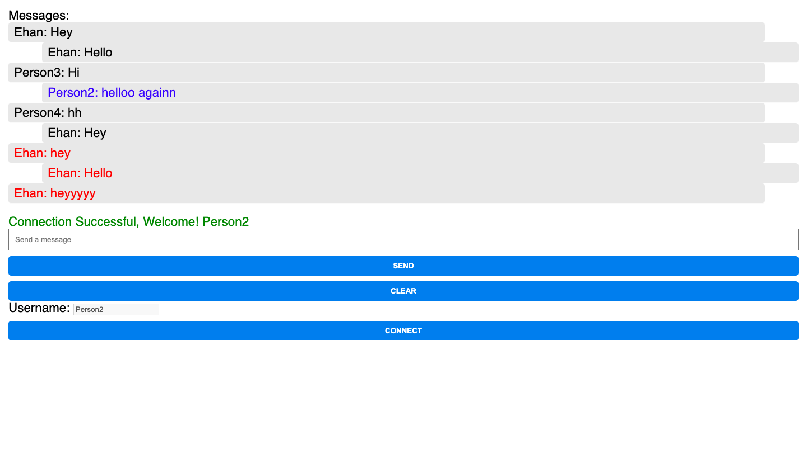

Private & Group Messaging Chat Server

The Private & Group Messaging Chat Server is a real-time communication platform developed using Node.js and Socket.IO. It allows multiple users to communicate in public chat rooms, participate in group discussions, and send private messages to individual users. This project was designed to create an interactive and engaging chat environment, providing advanced features to enhance user experience.
The system allows users to register with unique usernames and join chat sessions in real-time. Users can create private groups and initiate one-on-one conversations, with features such as message alerts, color-coded private messages, and the ability to clear chat histories for individual sessions. The backend is designed to handle concurrent users efficiently, ensuring that chat messages are delivered instantly across multiple clients.
Features and Functionalities
Real-Time Messaging: Built using Socket.IO, this chat server provides real-time messaging capabilities, allowing multiple users to send and receive messages instantaneously. This ensures seamless communication without delays.
Private Messaging: Users can initiate private one-on-one conversations by specifying a recipient. This feature ensures that users can have confidential discussions, enhancing the versatility of the platform.
Group Messaging: Users can create private groups and invite others to join. This feature is useful for group discussions, collaborative work, or even study sessions, making the chat server more dynamic and user-friendly.
Custom Message Alerts: The system provides custom message alerts for various events, such as when a user joins or leaves a chat room, or when a message fails to send. This helps users stay informed about the status of their communications.
Chat History Management: Users have the ability to clear their chat history for individual sessions, giving them control over the messages they wish to keep or delete. This feature adds a layer of privacy and customization to the chat experience.

Check out the Demonstration
Watch the full demonstration of the Private & Group Messaging Chat Server in action:
Technologies Used
- JavaScript
- Node.js
- Express.js
- Socket.IO
- HTML/CSS